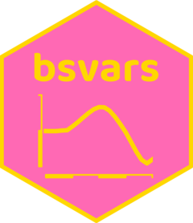

Computes posterior draws of conditional covariance matrices
Source:R/compute_conditional_covariance.R
compute_conditional_covariance.RdComputes in-sample posterior draws of the covariance matrices of the reduced-form innovations.
Arguments
- posterior
posterior estimation outcome obtained using
estimate().
Value
An object of class PosteriorCovariance: an
NxNxTxS array for N observed variables, T estimation
observations (after lags), and S saved posterior draws. The axes
are labelled with variable names, variable names, estimation times,
and draw indices, respectively.
Details
For the structural equation \(B\epsilon_t = u_t\),
$$\Sigma_t = B^{-1}\mathrm{diag}(\sigma_t^2)(B^{-1})',$$
where \(\sigma_t\) contains the structural shock standard deviations
returned by compute_conditional_sd().
Each matrix is conditional on the draw's parameters and in-sample
volatility or regime. For Student-t shocks, the auxiliary mixing scales
lambda are integrated out.
Author
Fei Shang sfmax2010@gmail.com
Examples
specification = specify_bsvar$new(us_fiscal_lsuw, p = 1)
#> The identification is set to the default option of lower-triangular structural matrix.
burn_in = estimate(specification, 5)
#> **************************************************|
#> bsvars: Bayesian Structural Vector Autoregressions|
#> **************************************************|
#> Gibbs sampler for the SVAR model |
#> **************************************************|
#> Progress of the MCMC simulation for 5 draws
#> Every draw is saved via MCMC thinning
#> Press Esc to interrupt the computations
#> **************************************************|
posterior = estimate(burn_in, 5)
#> **************************************************|
#> bsvars: Bayesian Structural Vector Autoregressions|
#> **************************************************|
#> Gibbs sampler for the SVAR model |
#> **************************************************|
#> Progress of the MCMC simulation for 5 draws
#> Every draw is saved via MCMC thinning
#> Press Esc to interrupt the computations
#> **************************************************|
covariance = compute_conditional_covariance(posterior)
# covariance matrix at the first observation and draw
covariance[, , 1, 1]
#> ttr gs gdp
#> ttr 0.009609006 -0.005529367 0.006483086
#> gs -0.005529367 0.004205807 -0.004036925
#> gdp 0.006483086 -0.004036925 0.004728764